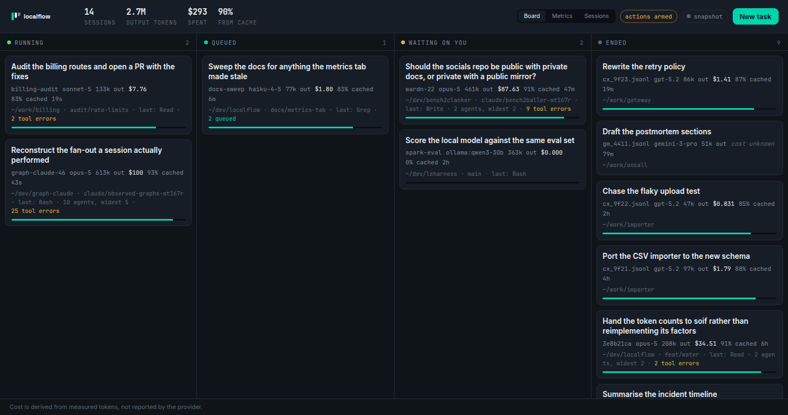
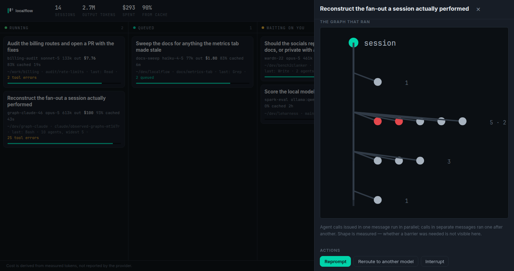

localflow
Four terminals open. Two of them are waiting for you.
You have several Claude Code sessions running right now. One is working, some are blocked on a question you have not noticed, and one of them has quietly spent more than the rest of the week combined. localflow reads the registry and the transcripts already on your disk and puts all of it on one board.
- alpha
- 62 tests passing
- zero runtime deps
- reads only your own disk
- MIT
The board
Four lanes, and deliberately no fifth
Every Claude Code session on the machine, live. The lane mapping is dull on purpose, because every interesting version of it involves guessing.

| Lane | What it means |
|---|---|
| running | The registry says busy. The model is working. |
| queued | Idle with prompts enqueued and not yet started. |
| waiting on you | Idle with an empty queue. It wants an answer — and a session blocked on a question is invisible from the terminal you are not looking at. |
| ended | Gone from the registry. |
There is no "done" lane. Nothing on your disk records whether a session achieved what it was asked to do — only that it stopped. A board that rendered "ended" as "went well" would be inventing the one fact you most want, which is the same defect authsweep calls a false clean, wearing a green tick.
$ localflow board
{hi}localflow{/hi} 7 session(s) · 1.9M out · 738.9M cached in · $593
98% of input tokens came from cache
running (2)
{hi}Build whitespace agent workflow tooling in unchained-labs{/hi}
graph-claude-46 · opus-5 · 660k out · $184 · 99% cached · 38s
~/dev/graph-claude · last: Bash · 23 tool errors
waiting on you (3)
{hi}create a new repo for socials where we will have private docs …{/hi}
wardn-22 · opus-5 · 839k out · $328 · 97% cached · 2d
~/dev/bench2clanker · claude/bench2baller-mt167r · last: BashNothing is sent anywhere. No daemon, no config, no account — the data is already on your disk and localflow reads it with claude agents --json, which is a supported, TTY-free command, plus the transcripts Claude Code writes anyway.
Cost
Two corrections, both invisible unless you go looking
The board prices every session from the token counts in its own transcript. Getting that right needed two fixes, and neither would have announced itself.
Usage is re-emitted as a message streams
The same usage object appears up to ten times per message, byte identical, once per streamed update. Summing every line inflated output tokens by 2.25x on a real 17MB transcript, which would have made every figure on the board wrong by that factor. Counting once per message id is exact rather than approximate — every duplicate was identical.
Cache writes are billed by how long they live
A 1-hour cache write costs 2x the input rate; a 5-minute one costs 1.25x. Claude Code writes 1-hour entries, so a single 1.25x multiplier under-prices a real session by about a third.
This is measured, not recalled. claude -p --output-format json reports total_cost_usd for the run it just did, which makes it an oracle: pick multipliers, price the reported tokens, and see whether the arithmetic lands on the number the CLI printed.
531 input + 22188 cache-read + 3026 cache-write(1h) + 51 output, haiku
1.25x -> $0.0067873000
2.00x -> $0.0090568000
CLI -> $0.0090568000The test suite re-runs that check against a captured fixture on every commit, so a rate change fails the build instead of quietly changing your bill. Where no price is known for a model the card reads cost unknown, never $0.00 — the first is a fact and the second is a lie.
The graph that ran
Lint the run you already paid for
graphlint lints the workflow you wrote. That is the easy half: a spec is a statement of intent, and intent is not what your bill is made of.
Every fan-out Claude Code performs is recorded — which agents were issued together, how wide the group got, which came back with an error. So the graph can be reconstructed afterwards and handed to exactly the same tools.
localflow graph f60740f7 > observed.graph.json
graphlint check observed.graph.json # lint the run you already paid for
preflight estimate observed.graph.json # price the next one like itAgent calls sharing an assistant message ran concurrently; calls in separate messages ran one after another. The grouping is the graph. Each observed sequence is emitted as a barrier whose reason begins observed: — a measurement, not an opinion about whether the barrier was needed. That question belongs to graphlint, which now has real graphs to ask it about instead of only the ones people wrote down.
Shape, not intent. A transcript records the calls, not the reasoning behind them. localflow can see that a barrier happened; it cannot see whether one was needed, and it does not pretend to. It adds only the observations that need the measured numbers to be sayable at all — three verifiers whose prompts are 100% alike, a fan-out where children failed, a session running at a 12% cache hit rate — and does not duplicate graphlint's rule set, because two rule sets eventually disagree.
And the number preflight said it could not measure
preflight's calibrate is careful about one refusal: it does not invent a cache hit rate, because usage rows do not report cache reads. True of the rows it had. A Claude Code transcript reports cache_read_input_tokens and a cache_creation object split by TTL, so here it is a measurement — and it is the assumption a cost model is most sensitive to, since cache reads are ~98% of input tokens on a real session and bill at a tenth of the rate.
$ localflow calibrate > preflight.json
measured across 11 session(s), 900 model call(s)
cacheHitRate 97.9% measured, not assumed
reported, not written:
input per call 332,433 p10–p90 27,648–1,070,519
output per call 2,413Only the rate is written, and the reason is the interesting part. preflight's worker profile means one unit of work and defaults to 8k input. An interactive session measures 332k per call, because by call two hundred the context is the conversation. Both numbers are correct and they are not the same quantity — writing the second into the first would be a fortyfold error wearing the authority of a measurement, which is precisely the failure preflight's own refusals exist to prevent.

Orchestrating
Four verbs, and one deliberate absence
Off by default. localflow watches; it steers only when you ask it to, with --allow-actions.
| Verb | What it runs |
|---|---|
| spawn | claude --bg -p <prompt> — a background agent, in a directory you allowed |
| reprompt | claude --resume <id> -p <prompt> — another turn on the same session |
| reroute | claude --resume <id> --fork-session --model <m> — the same conversation, a different model. The original is left exactly as it was. |
| stop | SIGINT to the session's pid, which is what Ctrl-C sends |
The fifth verb is missing on purpose. A board like this obviously wants to inject a prompt into a session that is mid-turn. Each live session has a Unix socket under /run/user/<uid>/cc-socks/, and driving it would mean reverse-engineering an undocumented protocol that can change in any release. So reprompt on a busy session refuses and tells you to fork instead. A tool that steers your agents through a private channel is a tool that silently stops steering them one Tuesday.
Dragging a card asks for the action that would put it in that lane. Most moves have no such action — you cannot drag a session into running, because what makes a session run is having something to do — and the lane refuses in red and says why, rather than snapping the card back and pretending nothing happened.
Safety
This can start Claude sessions, so it is fussy about who asks
A page on the open internet can point your browser at 127.0.0.1. Four things stop that page reaching this server, and CI asserts every one of them on each commit.
Actions are off
Without --allow-actions every mutating route answers 403. Watching is the default; steering is opted into.
Host is checked
DNS rebinding resolves an attacker's hostname to 127.0.0.1, and the give-away is that the browser still sends their name in Host.
Origin is checked
A cross-site POST carries the originating site. A fetch from our own page carries ours; curl sends none. Anything else is refused.
Loopback by default
Binding anywhere else has to be spelled out, and prints a warning saying who can now read your transcripts.
Limits
What it does not do
It cannot tell you whether a session succeeded. That is not recorded anywhere it can read, so it does not guess.
It reads Claude Code only. Not Cursor, not Aider, not the API directly. The board is built on claude agents --json and the transcript layout — the first is a supported command, the second is not a published schema. It was derived from a real installation and a future version could move it.
Tool errors are not failures. A tool_result with is_error is routine: a grep that matched nothing, a command that exited 1. The count is shown; no card is marked broken for it.
History is capped. Ten ended sessions by default. A machine with a year of transcripts should not turn the board into an archive.
The family
Where this sits
graphlint
Lints the graph localflow reconstructs — and every agent workflow spec you write by hand.
preflight
Prices the graph before it runs. localflow measures what it cost afterwards, and hands back the cache rate.
Otter
Set LOCALFLOW_OTTER_URL and jobs from the Kymatics orchestration engine appear on the same board.